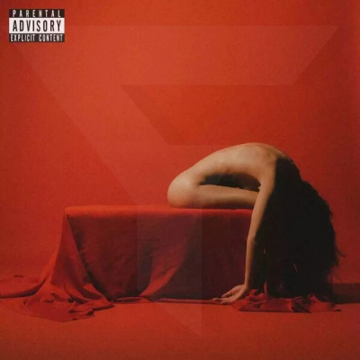

Bad Omens или BMTH здорового человека
Что это и почему я должен это послушать?
Группа родилась в Ричмонде, Вирджиния в далеком 2015 году (божечки кошечки! это же 7 лет назад). Основатели - Ноа Себастьян, Николас Руффило и Винсент Рикье, позже к ребятам присоеденились Ник Фолио и Йоаким Карлсон. Эти имена, конечно же, должны о многом сказать человеку который впервые слышит об этой группе.
Их стиль - металкор. Многие сейчас достали помидоры чтобы кинуть в уважаемую редакцию. И на этих помидорах 100% написано "да ет ж постхардкор", "альтернатива", "митол". Но уважаемая редакция обезопасит себя максимально: данная статья не попадет на обозрение широкой общественности. Опасность попасть под горячую руку натоков обезврежена на корню.
Что по новостям?
К великой радости уважаемой редакции 2022 год ознаменовался весьма не кислойй новостью - выходит новый альбом "ARTIFICIAL SUICIDE".
На сегодняшний день можно с уверенностью заявить что 4 и 14 из списка засели в плейлисте засели надолго. К великому позору уважаемой редакции нет подпииски на Спотифай, так что ждем 25 февраля дабы насладиться остальным.

- Concrete Jungle
- Nowhere To Go
- Take Me First
- The Death Of Peace Of Mind
- What It Cost
- Like A Villain
- Bad Decisions
- Just Pretend
- The Grey
- Who Are You?
- Somebody Else.
- IDWT$
- What Do You Want From Me?
- Artificial Suicide
- Miracle
- Примечания редакции
-
- Все люди разные и их мнения и вкусы могут не совпадать.
- Вся информация размещена по собственному желанию, не спонсирована (к сожалению).
- Ознакомиться с произвиидениями можно по ссылке.